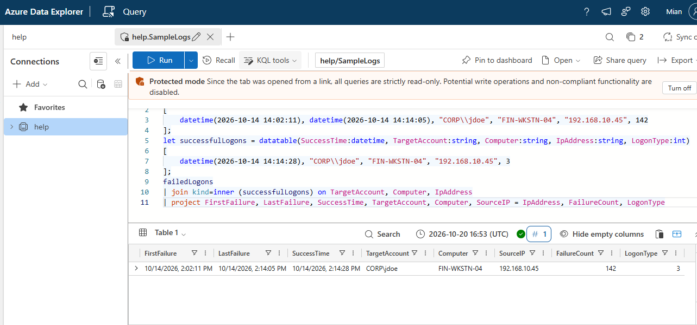
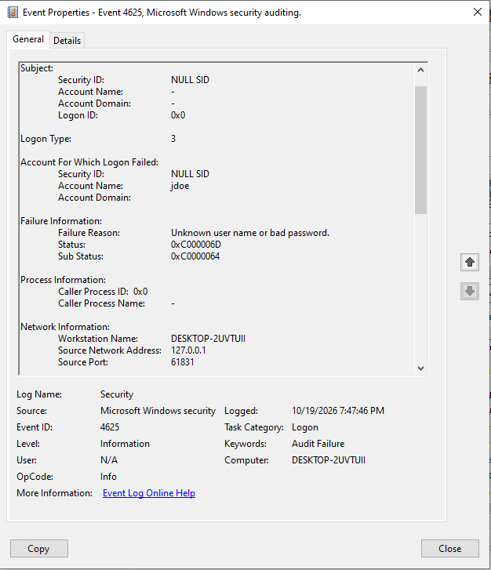

Lab 05: Brute Force Detection Logic in KQL¶
Simulated scenario: read this first
The attack story below (host FIN-WKSTN-04, account CORP\jdoe, source 192.168.10.45) is a scenario I designed to build and test detection logic. It is not a real incident and no containment took place. The KQL was tested in Azure Data Explorer against a small hand-built dataset, and separately against real failed logons I generated on my own machine. Running it against live Sentinel telemetry is planned as Lab 05 v2.
In plain English
What this is: Brute force means guessing a password over and over until one works. I wrote search logic that spots many failed logins followed by a successful one from the same place.
Why it matters: One wrong password is normal. Dozens of failures in minutes, then a success, means someone probably guessed their way in.
What I did: Designed an attack scenario, tested the search logic on sample data, then tested it against real failed logins on my own computer. That real test exposed two blind spots, which I fixed.
Result: An improved rule, plus a second rule for password spraying. The next step is running both on a real cloud SIEM with live data.
Skills this lab shows: KQL Windows logon events Correlation logic Detection testing Tuning
Key terms in this lab
- Brute force: guessing one account's password repeatedly
- Password spraying: trying a few common passwords across many accounts
- KQL: the search language for Microsoft Sentinel
- Event IDs 4625 / 4624: Windows log entries for a failed and a successful login
Every term is explained in the Glossary.
1. Objective¶
A single failed logon means nothing. Users mistype passwords all day. What matters is many failures followed by a success from the same source, because that means the attacker probably got in.
The goal: write KQL that correlates repeated Event ID 4625 failures with a 4624 success, test the logic, and find out where it breaks.
2. How Windows Records Logons¶
| Event ID | Meaning | Why it matters here |
|---|---|---|
| 4625 | An account failed to log on | Source IP, target account, logon type, and the failure reason |
| 4624 | An account logged on successfully | Tells you whether the guessing worked |
| 4688 | A new process was created | Shows what the attacker did next, if process auditing is on |
The SubStatus field on 4625 tells you why the logon failed, and that changes what you are looking at:
| SubStatus | Meaning | What it suggests |
|---|---|---|
0xC000006A |
Account exists, wrong password | Password guessing against a real account |
0xC0000064 |
Account does not exist | Username enumeration, or spraying a list of guessed names |
0xC0000072 |
Account disabled | Attempts against dormant accounts |
0xC0000234 |
Account locked out | Lockout policy triggered, often by brute force |
Note
0xC000006D usually appears in the Status field ("unknown user name or bad password"). The SubStatus carries the specific reason. Always read SubStatus.
Logon types matter too: 3 is network (SMB, for example), 10 is RDP, 2 is interactive at the keyboard. See the Event ID Reference for the full list.
3. Scenario Design (simulated)¶
The scenario I built the rule around:
| Time (UTC) | Event | Detail | Meaning |
|---|---|---|---|
| 14:02:11 | 4625 | CORP\jdoe, from 192.168.10.45, Logon Type 3, SubStatus 0xC000006A |
Guessing starts |
| 14:14:05 | 4625 | 142nd failure in 12 minutes | Too fast and too regular for a human |
| 14:14:28 | 4624 | CORP\jdoe, from 192.168.10.45, Logon Type 3 |
The password was guessed |
| 14:15:10 | 4688 | whoami /all run on FIN-WKSTN-04 under CORP\jdoe |
Attacker checks who they are and what groups they have (T1033) |
4. Test 1: Correlation Logic in Azure Data Explorer¶
I don't have live Sentinel data for this scenario, so I tested the join logic in Azure Data Explorer's free query environment. I wrote the two event summaries as a datatable and ran the correlation against them.
let failedLogons = datatable(FirstFailure:datetime, LastFailure:datetime, TargetAccount:string, Computer:string, IpAddress:string, FailureCount:int)
[
datetime(2026-10-14 14:02:11), datetime(2026-10-14 14:14:05), "CORP\\jdoe", "FIN-WKSTN-04", "192.168.10.45", 142
];
let successfulLogons = datatable(SuccessTime:datetime, TargetAccount:string, Computer:string, IpAddress:string, LogonType:int)
[
datetime(2026-10-14 14:14:28), "CORP\\jdoe", "FIN-WKSTN-04", "192.168.10.45", 3
];
failedLogons
| join kind=inner (successfulLogons) on TargetAccount, Computer, IpAddress
| project FirstFailure, LastFailure, SuccessTime, TargetAccount, Computer, SourceIP = IpAddress, FailureCount, LogonType

What this test proves: the join keys line up and the output is what an analyst needs. What it does not prove: how the rule behaves on real, messy telemetry. That is what Test 2 is for.
5. Test 2: Real Failed Logons on My Workstation¶
Next I generated real failed network logons on my own machine (DESKTOP-2UVTUII) against the account name jdoe, which does not exist there, and looked at what Windows actually recorded.

This real event exposed two gaps in my first version of the rule:
| What the real event showed | Problem with version 1 | Fix in version 2 |
|---|---|---|
SubStatus 0xC0000064, not 0xC000006A |
v1 only matched wrong-password failures, so attacks against nonexistent accounts (enumeration, spraying guessed names) were invisible | Match both SubStatus values |
Source 127.0.0.1 |
v1 excludes loopback, so this local test could never fire | Correct for production, since loopback failures come from local services. For local testing, remove that filter temporarily |
Also, version 1 grouped by target account. That catches one account being hammered but misses password spraying, where an attacker tries one password across many accounts. Version 2 groups by source IP and host instead and records which accounts were tried.
6. Detection Rule v2 (Sentinel SecurityEvent)¶
let lookback = 1h;
let failureThreshold = 10;
let successWindow = 10m;
let failures = SecurityEvent
| where TimeGenerated > ago(lookback)
| where EventID == 4625
| where LogonType in (3, 10)
| where SubStatus in~ ("0xc000006a", "0xc0000064")
| where isnotempty(IpAddress) and IpAddress !in ("-", "127.0.0.1", "::1")
| summarize
FailureCount = count(),
FirstFailure = min(TimeGenerated),
LastFailure = max(TimeGenerated),
AccountsTried = make_set(TargetUserName, 50)
by IpAddress, Computer
| where FailureCount >= failureThreshold;
let successes = SecurityEvent
| where TimeGenerated > ago(lookback)
| where EventID == 4624
| where LogonType in (3, 10)
| project SuccessTime = TimeGenerated, IpAddress, Computer, SuccessAccount = TargetUserName;
failures
| join kind=inner successes on IpAddress, Computer
| where SuccessTime between (FirstFailure .. (LastFailure + successWindow))
| project FirstFailure, LastFailure, SuccessTime, AttackerIP = IpAddress, VictimHost = Computer,
SuccessAccount, FailureCount, AccountsTried
| order by SuccessTime desc
Companion rule: password spraying¶
Spraying looks different: many accounts, few attempts each, to stay under lockout thresholds.
SecurityEvent
| where TimeGenerated > ago(1h)
| where EventID == 4625 and LogonType in (3, 10)
| where isnotempty(IpAddress) and IpAddress !in ("-", "127.0.0.1", "::1")
| summarize Attempts = count(), DistinctAccounts = dcount(TargetUserName),
Accounts = make_set(TargetUserName, 25) by IpAddress, bin(TimeGenerated, 15m)
| where DistinctAccounts >= 5 and Attempts <= DistinctAccounts * 3
Validation status
Both rules are written for the Sentinel SecurityEvent schema. They have not yet been run against live Sentinel data. Thresholds (10 failures, 5 accounts) are starting points that would need tuning against a real baseline.
7. Expected False Positives and Tuning¶
| Source of noise | Why it fires | How to handle it |
|---|---|---|
| Service account with an expired password | Retries every few seconds, forever | Find and fix the service; allowlist only after fixing |
| User who just changed their password | Phone or mapped drive keeps using the old one | Usually low count, single account; check the device |
| Vulnerability scanners | Authenticated scans try many logons | Allowlist scanner IPs, but alert if they ever succeed unexpectedly |
| VPN or NAT gateways | Many users share one source IP | Group by account as well, or exclude the gateway and use VPN logs |
8. If This Fired for Real: Response Steps¶
- Confirm: check the 4624 for the logon type, the time gap from the last failure, and whether the source IP is normal for this user.
- Scope: look for other successes from the same IP, and any 4688 process activity under the account after the logon.
- Contain: disable the account or force a password reset, kill active sessions, and isolate the source host if it is internal.
- Escalate: a confirmed guessed password is a true positive at High severity. Escalate to IR with the timeline.
- Prevent: enforce MFA, review lockout policy, and block legacy NTLM where possible.
9. Takeaways¶
- Test against real events, not just your assumptions. One real 4625 from my own machine found two gaps the simulated test never would have.
- SubStatus changes the story.
0xC000006Ameans a real account is being guessed.0xC0000064means someone is guessing names. - Group by source to catch spraying. Grouping by account only catches one account being hammered.
- Next: Lab 05 v2 runs these rules against real telemetry from a Windows VM sending logs to a Sentinel workspace.